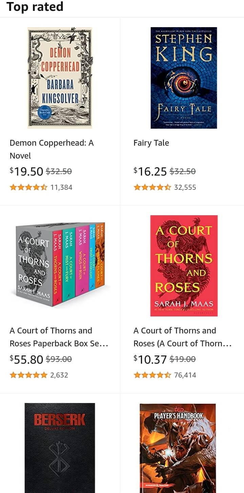
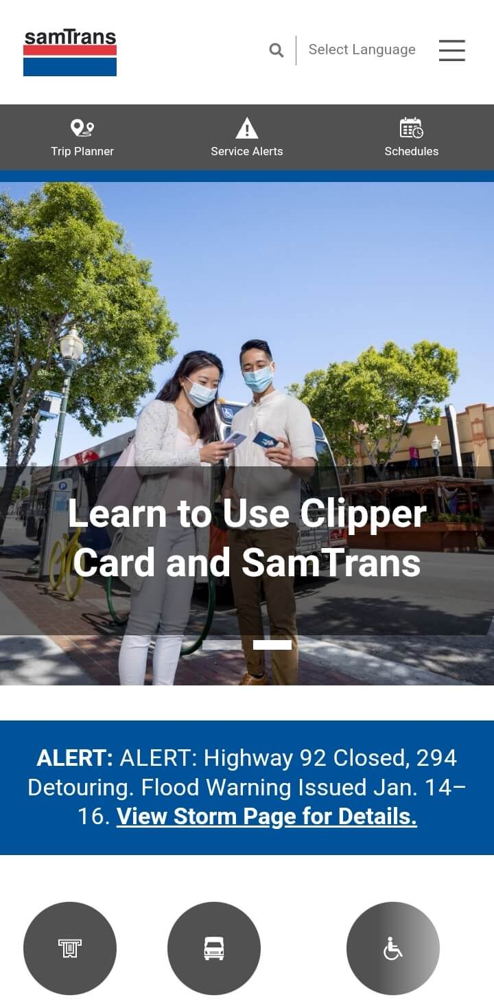

Visual Hierarchy
BYU Pathway
byupathway.org
BYU Pathway uses the principle "visual hierarchy" of web design to catch the attention of the user's eye. The big eye catcher is the student with a big smile on her face, followed by the headline("Make 2023 your year"), and a call to action("Begin today"). In addition, the user will notice the nav bar with the school's logo, a button saying "Apply now", and the three lines that will pop-up the options of the website if the user taps on it.
White Space and Clean Design
Amazon
amazon.com
Amazon uses the principle "white space and clean design" of web design to have a clean look with the products that they are selling. In this case they are selling books. The white space on this website is very simple yet professional because the principle gave it a readable look. In addition, you can distinguish which prices or reviews belong to a specifc book. This will make it easier for the users to determine which book to purchase.
Contrast
SamTrans
samtrans.com
Samtrans uses the principle "contrast" of web design to have a readable font on the hero image. The hero image contains two people, buildings, and a clear blue sky. In order for the users to read the text, Samtrans most likely gave a background for the text and set it at a low opacity. Because of this technique, the text is readable for the users. In addition, this technique is very common for front end developers if they have a hero image that will cause the text difficult to read.